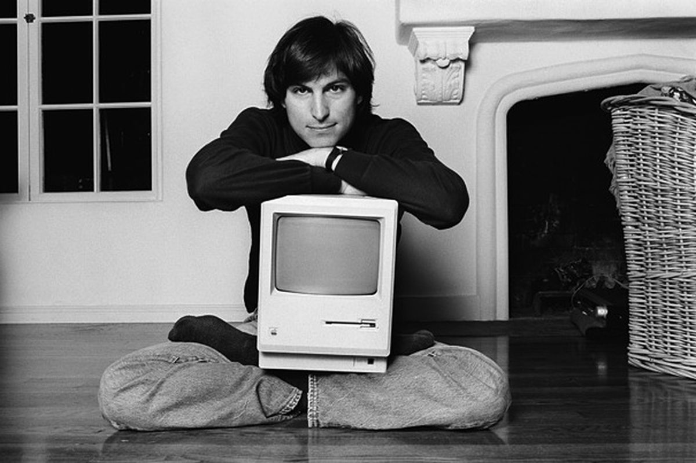

Apple Inc. (prej imenovano Apple Computer) je ameriško večnacionalno podjetje, ki proizvaja operacijske sisteme, pametne telefone, računalnike in multimedijske naprave s sedežem v Cupertinu v Kaliforniji.
Šteje se za eno izmed tehnoloških podjetij Big Tech, skupaj z: Amazon, Google, IBM in Meta.
Podjetje so leta 1976 ustanovili Steve Jobs, Steve Wozniak in Ronald Wayne v Cupertinu v Silicijevi dolini v Kaliforniji za razvoj in prodajo Wozniakovega osebnega računalnika Apple I, čeprav je Wayne svoj delež prodal v 12 dneh. Januarja 1977 je bilo ustanovljeno kot Apple Computer Inc. in prodaja njegovih računalnikov, vključno z Apple II, je hitro rasla. V nekaj letih sta Jobs in Wozniak najela osebje računalniških oblikovalcev in imela proizvodno linijo. Apple je šel na borzo leta 1980 s takojšnjim finančnim uspehom. Z leti je Apple izdal nove računalnike z inovativnimi grafičnimi uporabniškimi vmesniki - kot je Macintosh 128K leta 1984 - in Applovi marketinški oglasi za njegove izdelke so bili deležni širokega odobravanja kritikov. Vendar pa sta visoka cena njegovih izdelkov in omejena knjižnica aplikacij povzročila težave, pa tudi boj za oblast med vodilnimi. Leta 1985 je Wozniak sporazumno zapustil Apple in ostal častni uslužbenec, medtem ko so Jobs in drugi odstopili in ustanovili NeXT. Skozi čas je Apple širši javnosti predstavil številne novosti na področju visoke tehnologije in dizajna, ki se nanašajo na računalniške izdelke. Od 1. aprila 1976 do 3. januarja 1977 je bilo znano kot Apple Computer Company, od 3. januarja 1977 do 2007 pa kot Apple Computer Inc.

| Leto | Dobiček
v milijonih $ |
Impiegati |
|---|---|---|
| 2000 | 7.983 | |
| 2001 | 5.363 | |
| 2002 | 5.742 | |
| 2003 | 6.207 | |
| 2004 | 8.279 | |
| 2005 | 13.931 | 14.800 |
| 2006 | 19.315 | 17.800 |
| 2007 | 24.578 | 21.600 |
| 2008 | 37.491 | 32.000 |
| 2009 | 42.905 | 34.300 |
| 2010 | 65.225 | 46.600 |
| 2011 | 108.249 | 60.400 |
| 2012 | 156.508 | 72.800 |
| 2013 | 170.910 | 80.300 |
| 2014 | 182.795 | 92.600 |
| 2015 | 233.715 | 110.000 |
| 2016 | 215.639 | 116.000 |
| 2017 | 229.234 | 123.000 |
| 2018 | 265.595 | 132.000 |
| 2019 | 260,174 | 137.000 |